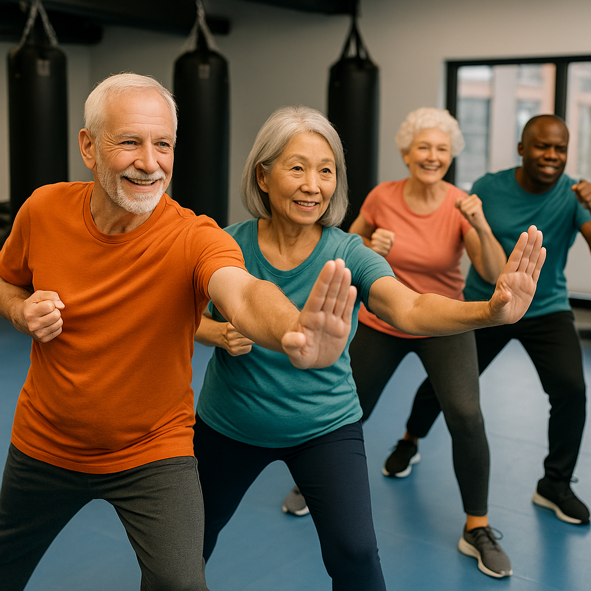
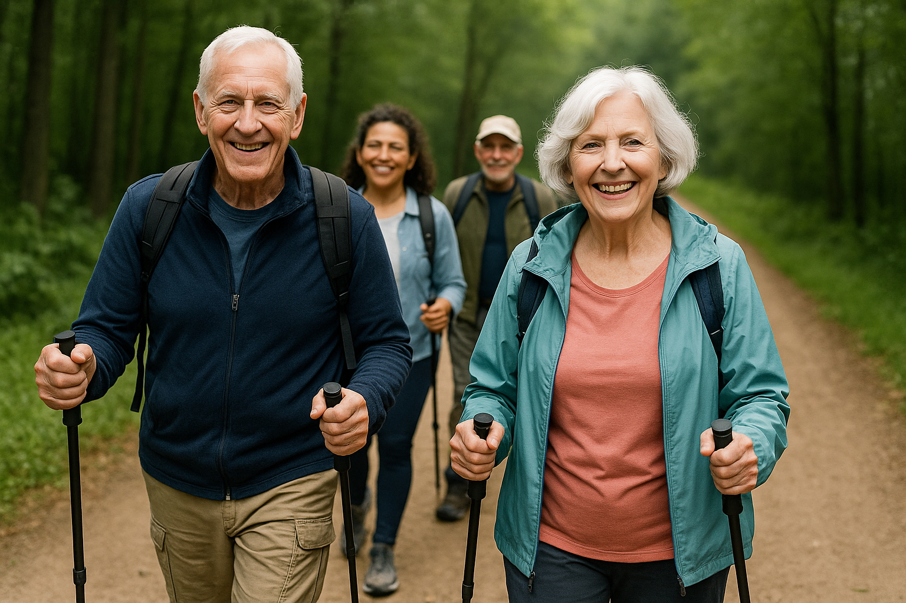
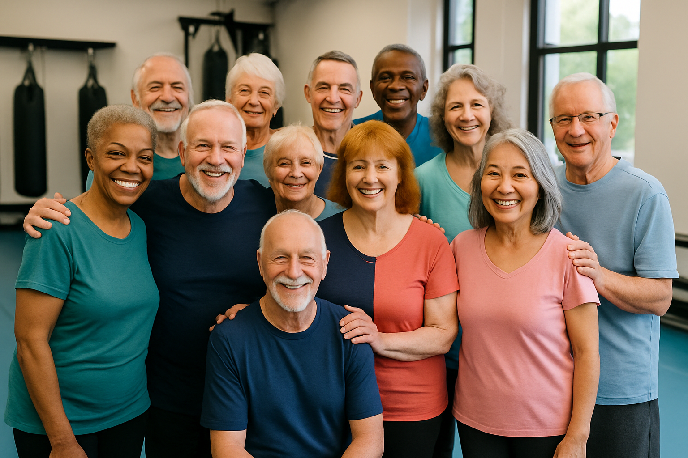

Activités Seniors
« L’activité physique est le meilleur des médicaments, sans ordonnance et sans effets secondaires. »
Aujourd’hui, grâce aux progrès de la médecine et de la prévention, les seniors arrivent à la retraite en bien meilleure forme qu’il y a quelques décennies. Mais pour conserver cette autonomie, cette énergie et cette vitalité, il est indispensable de continuer à bouger !
Plusieurs études internationales ont démontré que pratiquer au moins 2h30 d’activité physique modérée par semaine (marche rapide, exercices doux, mobilité, renforcement léger) permet de réduire :
- le risque de maladies cardiovasculaires de 35 à 40 %
- le risque de diabète de type 2 de 30 à 40 %
- le risque de chute et de fracture de 30 %
- le risque de démence et troubles cognitifs de 30 à 35 %
- les douleurs articulaires chroniques de 25 à 40 %
En Suisse, on estime que seuls 1 senior sur 3 respecte actuellement ces recommandations — alors qu’il est scientifiquement prouvé que commencer, même tard, apporte des bénéfices mesurables dès les premières semaines.


Pour qui ?
Chez Moov’Ensemble, nous savons que les seniors sont un groupe très hétérogène. Certain·e·s arrivent à la retraite en pleine forme, grâce à une bonne hygiène de vie et à des soins réguliers. D’autres, en revanche, doivent regagner confiance dans leur corps, retrouver de la force musculaire, de l’équilibre et de la souplesse pour éviter les chutes et rester autonomes.
Nos cours s’adressent à tous les niveaux de condition physique, avec des objectifs adaptés :
- pour celles et ceux qui souhaitent préserver leur forme actuelle et rester actifs longtemps,
- pour celles et ceux qui veulent retrouver confiance dans leurs mouvements, améliorer leur équilibre et diminuer leur douleur,
- pour celles et ceux qui ont envie de bouger en douceur et de partager un moment convivial avec d’autres.
Chez Moov’Ensemble, nous croyons que chaque senior mérite un accompagnement respectueux et individualisé.
Nos cours sont encadrés par des moniteurs certifiés, formés à la mobilité douce et aux spécificités des corps qui avancent en âge.
Nous organisons les participants en petits groupes homogènes selon leur condition physique et leurs besoins, pour que chacun progresse à son rythme.
Nous veillons à ce que chacun se sente en sécurité et encouragé, dans un cadre chaleureux et bienveillant.

« Il n’est jamais trop tard pour commencer… mais il peut être trop tard pour attendre. »